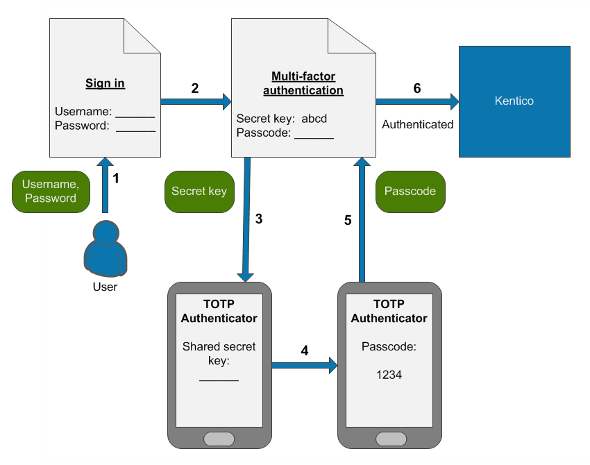

Configuring multi-factor authentication
Multi-factor authentication adds an additional layer of security to the sign-in process. In addition to the basic password, users need to verify their identity using one or more additional security components.
By default, Kentico provides support for a combination of standard forms authentication with a username and password, and a passcode generated by an authenticator application using the Time-based One-time Password Algorithm (TOTP), for example Google Authenticator.
The authenticator application must be compatible with RFC 6238.
The default multi-factor authentication process consists of the following steps:
A user wants to sign in and enters their username and password.
The system verifies the credentials, displays a secret key and requests a passcode.
The user enters the secret key into their TOTP authenticator application.
The application generates a temporary passcode.
The user types the passcode into the Kentico authentication form.
The system signs in the user.

The process of signing in to Kentico using multi-factor authentication
The system only displays the secret key on the first sign-in after multi-factor authentication is enabled. The next time the user signs in, the steps related to the secret key are no longer required, and the user only generates a new passcode in their authenticator application.
Passcode expiration
By default, the system accepts passcodes generated 5 minutes before or after the time of the authentication attempt. For example, if a user's authenticator application and your website server have exactly synchronized time settings, users have 5 minutes to enter the passcode.
Security and limitations
The multi-factor authentication is:
Available only for the default forms authentication method.
Not compatible with the Autocomplete functionality.
For security reasons, we strongly recommend limiting the maximum number of invalid sign-in attempts to a small value, for example 5. Incorrectly submitted passcodes count as invalid sign-in attempts, so potential attackers cannot guess a valid passcode in the specified number of attempts.
If the screen locking feature is enabled, entering of the passcode is also required when unlocking the screen.
Enabling multi-factor authentication
Notes
The multi-factor authentication settings have a global effect. They cannot be configured differently for individual sites.
Keep the Display secret key setting enabled unless you have a custom implementation of multi-factor authentication. With the default functionality, users need to enter the secret key into their authenticator application during their first sign-in to generate valid passcodes.
See also: Settings - Authentication
Enabling multi-factor authentication for selected users
Open the Settings application.
Select the Security & Membership -> Authentication category.
Select the Enable multi-factor authentication check box.
Click Save.
Open the Users application.
Edit the users for which you want to enable multi-factor authentication and enable the Multi-factor authentication is required option.
The given users will need to use multi-factor authentication when signing in to your website (or the Kentico administration interface).
You can also set up your site's registration or user account editing forms to allow users to choose whether to enable multi-factor authentication for their accounts. See Allowing users to enable or disable multi-factor authentication.
Enabling multi-factor authentication for all users in the system
Keeping administrator access
After you enable multi-factor authentication globally, make sure that you do not lose administrator access to the Kentico interface. During the next sign-in under your administrator account, note down the multi-factor secret key for your account.
The system only displays the secret key during the first sign-in. If you do not save the secret key or immediately set up your authenticator, you will lose access to the administration interface.
To enforce multi-factor authentication for all users in the system:
Open the Settings application.
Select the Security & Membership -> Authentication category.
Select the following check boxes:
Enable multi-factor authentication
Multi-factor authentication is required globally
Click Save.
All users now need to use multi-factor authentication when signing in to your website (or the Kentico administration interface). The Multi-factor authentication is required option of individual user accounts has no effect with this configuration.
Recovering administrator access
If you enable multi-factor authentication globally and lose access to your administrator account (for example if you lose the secret key without setting up your authenticator), you can restore access by adding the CMSAdminEmergencyReset key to the appSettings section of your project's web.config. For example:
<add key="CMSAdminEmergencyReset" value="admin;password;true" />admin – the user name of the new account.
password – the password for the new account – you should change it to your own value.
The third parameter is optional and indicates whether you want to create a new user with the Global administrator privilege level.
The system automatically deletes the key after you gain access to the administration interface.
Resetting the secret key for users
For multi-factor authentication to work, users need to enter a shared secret key into their authenticator application. The system displays this secret key to each user once during their first sign-in (after multi-factor authentication is enabled).
If a user loses the secret key before initializing their authenticator application, they will not be able to sign in. A new secret key is also required if a user wants to switch to a different authenticator application.
In these situations, administrators can reset the multi-factor secret of individual users:
Open the Users application.
Edit the given user account.
On the General tab, click the Reset button next to the Reset multi-factor secret field.
On the user's next sign-in attempt, the system displays a new secret key, which the user can enter into their authenticator application.
Allowing users to enable or disable multi-factor authentication
If you have multi-factor authentication enabled only for selected users, you can allow users to choose whether to enable multi-factor authentication for their account.
The Registration form web part automatically allows new users to choose whether to use multi-factor authentication.
With the Custom registration form web part, you can allow new users to choose by making the UserMFRequired field visible in the corresponding alternative form.
For user profile editing pages (on the live site or in the administration interface), you can allow users to enable or disable multi-factor authentication by making the UserMFRequired field visible in the corresponding alternative form.
To configure the visibility of the UserMFRequired field in user alternative forms:
Open the Modules application.
Edit the Membership module.
Select the Classes tab and edit the User class.
On the Alternative forms tab, edit the form that you use.
On the Fields tab, select the UserMFRequired field.
Enable the Display field in the editing form option.
Configure any required Field appearance settings.
Click Save.
The given form then allows users to enable or disable multi-factor authentication for their user account.
Customizing multi-factor authentication
If you wish to use a completely different authentication factor or passcode delivery method, you can implement your own solution (for example custom codes sent via email, SMS, etc.).
Developers can customize the parameters of the multi-factor authentication functionality by implementing a custom helper class that inherits from the CMS.Membership.MFAuthenticationHelper class.
The following example demonstrates how to register a custom helper that changes the length and validity interval of multi-factor authentication passcodes.
Open your Kentico solution in Visual Studio.
Create a new Class Library project in the Kentico solution (or reuse an existing custom project).
Add references to the required Kentico libraries (DLLs) for the new project:
Right-click the project and select Add -> Reference.
Select the Browse tab of the Reference manager dialog, click Browse and navigate to the Lib folder of your Kentico web project.
Add references to the following libraries (and any others that you may need in your custom code):
CMS.Base.dll
CMS.Core.dll
CMS.DataEngine.dll
CMS.Helpers.dll
CMS.Membership.dll
Reference the custom project from the Kentico web project (CMSApp or CMS).
Edit the custom project's AssemblyInfo.cs file (in the Properties folder).
Add the AssemblyDiscoverable assembly attribute:
usingCMS;[assembly:AssemblyDiscoverable]Add a new class under the custom project, inheriting from the MFAuthenticationHelper class.
ExampleusingSystem;usingCMS;usingCMS.Membership;// Registers the custom MFAuthenticationHelper[assembly: RegisterCustomHelper(typeof(CustomMFAuthenticationHelper))]publicclassCustomMFAuthenticationHelper : MFAuthenticationHelper{/// <summary>/// The time interval for which the system considers multi-factor passcodes to be valid./// Calculated as a time interval before or after the time of the authentication attempt./// The default value is 5 minutes./// </summary>protectedoverrideTimeSpan ClockDriftTolerance{get{// Sets the passcode validity to 2 minutes before or after the time of the authenticationreturnTimeSpan.FromMinutes(2);}}/// <summary>/// The length of the multi-factor passcode. The default value is 6./// Important: For the authentication to work, the value must match the number of characters used/// by the authenticator applications that generate passcodes for your users./// </summary>protectedoverrideintPasscodeLength{get{// Sets the passcode length to 10 charactersreturn10;}}}Save all changes and Build the custom project.
The custom helper in the example overrides the ClockDriftTolerance and PasscodeLength properties of the default MFAuthenticationHelper. When users attempt to sign-in with multi-factor authentication enabled, the system applies the customizations – passcodes must be 10 characters long and the validity tolerance is reduced to 2 minutes.